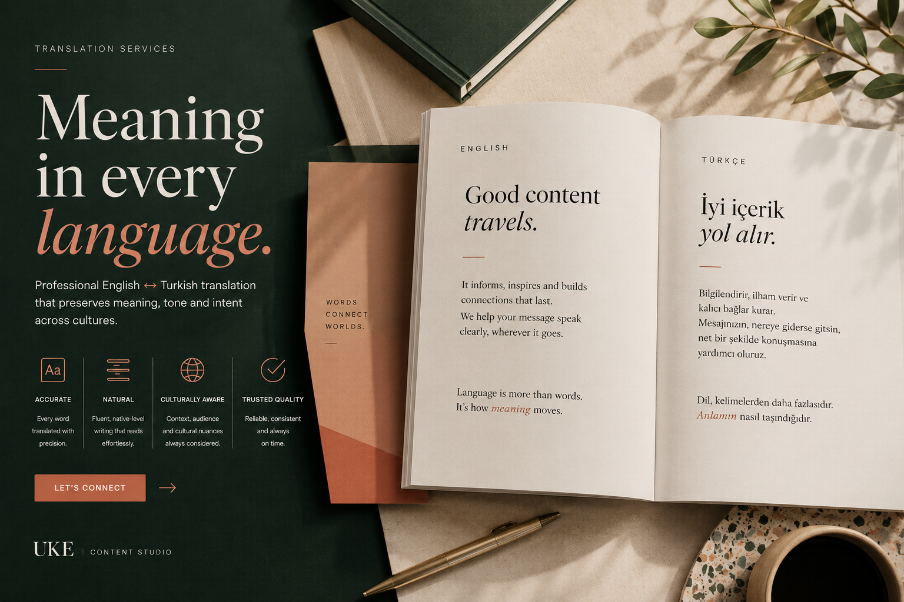

CASE STUDY
English–Turkish translation with accuracy, tone and context.
Translation support designed to preserve meaning, improve readability and make content feel natural in both languages.

OVERVIEW
Translating meaning, not just words.
This project demonstrates how English–Turkish translation can protect the original message while improving clarity and natural flow.
The process focuses on accuracy, terminology, tone, sentence structure and audience expectations across both languages.
PROJECT
Service
English ↔ Turkish Translation
Language Pair
English • Turkish
Focus
Accuracy • Tone • Context
CHALLENGE
Keeping the message accurate and natural.
Literal Wording
Direct translation can sound stiff and fail to reflect the intended message.
Tone Loss
The original tone needs to be carried into the target language with care.
Terminology Risk
Wrong or inconsistent terminology can weaken trust and professionalism.
Cultural Nuance
Some phrases need careful adaptation to feel natural for the reader.
SOLUTION
A translation process focused on meaning, accuracy and readability.
Review
Context Check
Understand the source text, audience and intended communication goal.
Translate
Natural Language
Translate with accurate meaning, clear phrasing and natural sentence flow.
Polish
Final Review
Check terminology, tone and readability before delivery.
RESULTS
Designed to make bilingual content clear and reliable.
Accurate
Meaning preserved with care.
Natural
Readable target-language flow.
Clear
Easy-to-understand wording.
Ready
Final text ready for use.
NEXT PROJECT
Need English–Turkish translation that feels accurate and natural?
Professional translation protects meaning, tone and reader trust across languages.